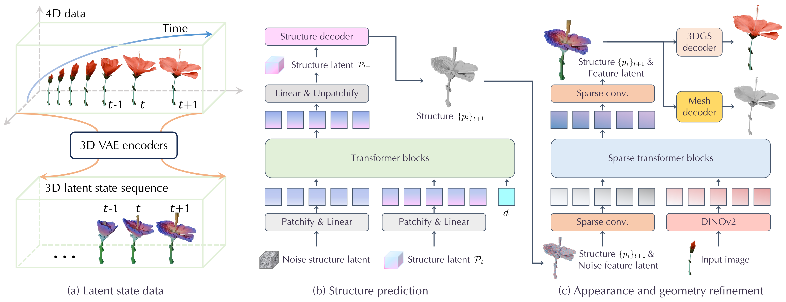

LSM predicts the dynamics geometry, texture, from a single input image.
What is the right representation for 4D (3D + time) generation of graphics assets conditioned on their current states? In this setting, an ideal 4D representation should support flexible geometric structure, empower long-horizon modeling, and utilize training data efficiently. We study this problem by considering a sufficiently challenging setting to stress test those properties: learning the generative distribution of the entire 4D lifespan of a plant, conditioned on a snapshot of its growth. We curate a large-scale dataset and benchmark for this setting, on which most existing 4D representations and accompanying generative models fail to deliver promising results. We analyze the pitfalls of existing representations and point out that the capacity of existing models is bounded by their representations: they are mostly augmenting a temporal dimension to an existing geometric representation, without a semantically-meaningful low-dimensional state representation. Instead, we argue for a framework for designing 4D representations by separately considering 3D state representations and temporal state transitions. We propose an instantiation of this framework using latent spaces of 3D foundation models and a transformer-based state transition model, effectively forming a finite state machine on a latent 3D space. Therefore, we name this instantiation a latent state machine and compare it against existing generative models on the proposed benchmark. Our evaluation shows that our model achieves state-of-the-art performance in expressiveness, data efficiency, and rendering quality, surpassing existing methods by a large margin.

LSM overview. (a) A 4D sequence is encoded by the finetuned TRELLIS 3D VAE encoders into a temporal sequence of structured latent states. (b) A state-transition flow transformer denoises the next sparse-structure latent 𝒫t+1 from the current state 𝒫t, with a learnable direction embedding d that switches the rollout between forward (future) and backward (past); a structure decoder then yields the sparse voxel set {pi}t+1. (c) A sparse flow transformer predicts per-voxel features on the predicted structure, conditioned on DINOv2 image features for identity preservation, and then the 3D representation decoders (e.g., meshes and 3D Gaussians) produce the final 4D asset.
@inproceedings{gao2026predictive,
title = {Predictive 4D Generation with Latent State Machines},
author = {Gao, Yue and Geng, Chen and Hu, Hanzhe and Wei, Fangyun and Xiang, Jianfeng and Yang, Jiaolong and Wu, Jiajun},
booktitle = {Advances in Neural Information Processing Systems (NeurIPS)},
year = {2026}
}